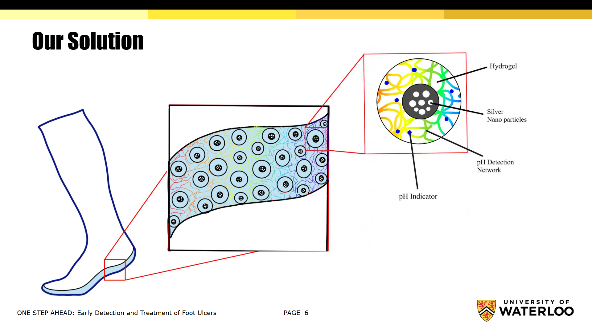
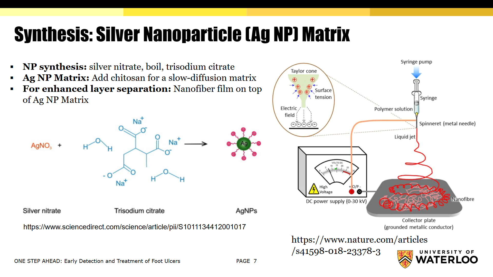
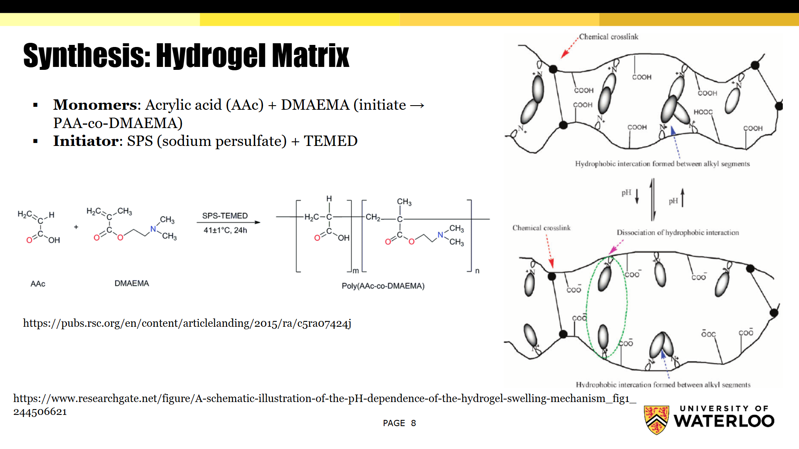
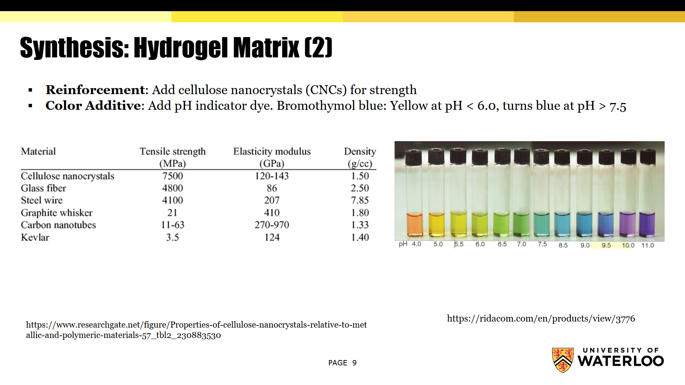
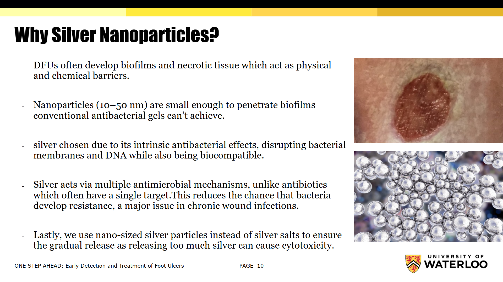
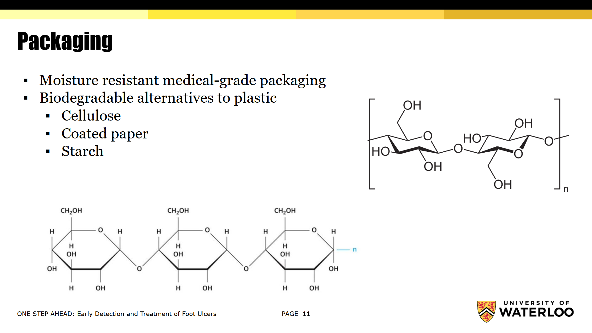

Project Overview
The goal of this hackathon is to apply nanotechnology to an existing medical problem. Our team focused on the treatment of diabetic foot ulcers, which are a common complication of diabetes that can lead to serious infections and amputations if left untreated.
Our solution is a foot patch near the sole of a sock that involves the use of a nanotechnology-based hydrogel which can be aligned with the affected area of the foot. The hydrogel is designed to release silver nanoparticles as an antibacterial agent in response to changes in pH at the site of a diabetic foot ulcer, which is a basic pH environment. By incorporating a pH indicator into the design, we would have feedback that can help us monitor the healing process and ensure the patch is in the right location on the foot. Additionally, we explored the use of electrospinning to create a nanofiber mat that can be used to deliver the hydrogel directly to the ulcer site, improving its effectiveness by enhancing layer separation.
As the Nanotechnology Engineer, I have presented the following solution on behalf of the team for our project on diabetic foot ulcer treatment:
- Examining the use of heat or adhesive backing to attach the full solution to targeted inner regions of the sock sole
- Applying the concept of electrospinning where you have a electric field that creates nano-sized fibers from a polymer solution
- Investigating the synthesis of a hydrogel matrix that initiates free-radical polymerization of monomers like acrylic acid (AA) and DMAEMA to make a crosslinked hydrogel.
- Exploring a crosslinked pH detection network that can detect pH changes at the ulcer site and release the silver nanoparticles accordingly.
- Incorporating a pH indicator in the design that utilizes silver nanoparticles


Trisodium citrate acts as both a reducing agent and stabilizing agent in the synthesis of the silver nanoparticles here from silver nitrate. Due to chitosan's viscous properties, the addition of chitosan to the nanoparticle matrix allows the diffusion of these silver nanoparticles to be more controlled towards the ulcer site.

As for the hydrogel matrix, with initiators SPS and TEMED, the two monomers - acrylic acid (AA) and DMAEMA - are used to create a crosslinked structure in which upon exposure to a basic pH environment, the carboxylic acid groups will deprotonate, leaving behind negatively chargedcarboxylate ions around the hydrogel. These negatively charged ions electrostatically repel against each other, creating a widening effect within the hydrogel matrix. This allows for a diffusion path for thesilver nanoparticles once the foot patch is exposed to the basic pH environment of the ulcer site.

Based on some data of materials, cellulose nanocrystals demonstrate promising mechanical properties for strength reinforcement in the hydrogel matrix. As for the pH indicator, a colour additive like bromothymol blue could be used. The color change would be visible to the naked eye, providing a simple way to indicate succesful patch application based on the pH changes at the ulcer site.

Some reasons as to why I chose silver nanoparticles for the treatment include their potent antimicrobial properties and the ability to enhance the delivery of therapeutic agents to the ulcer site.

Packaging for this product would be important as it could affect the stability and shelf-life of the nanoparticle matrix, given the nanoscale nature of the delivery system.